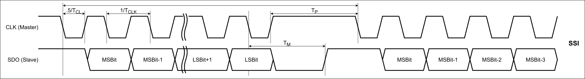
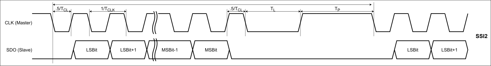
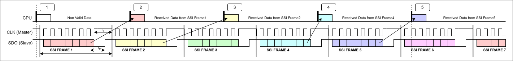
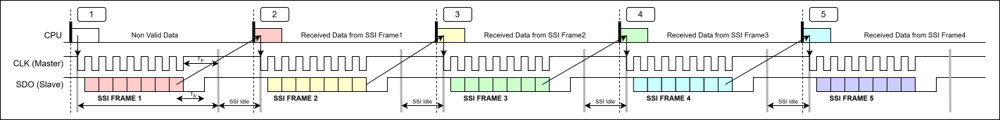
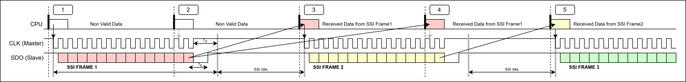
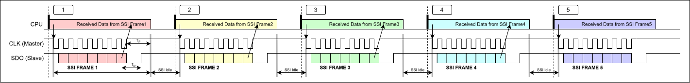

SSI Usage Notes — Usage information about the I/O module
The image below illustrates the timing diagrams of the SSI and SSI2 protocols.
SSI:

SSI2:

|
Timings Provided by the Master Device 1/TCLK = Period TP = Time pause TL = Time low |
Timings Provided by the Slave Device TM = Transfer timeout |
TP:
Time pause defines the idle time between two SSI messages, before the master restarts clocking to read the next data from the slave. Ensure that this time is greater than TM and is at least equal to 2*1/TCLK.
TL:
The time low is only used with SSI2. If enabled, the master will provide an additional clock with an extended low time of TL. TL must be at least 2.5 times the period (2.5*T). SSI2 is a variant of SSI for use with Codechamp encoders.
TM:
Transfer timeout (also known as mono-flop time). After the slave has shifted out its last bit, it will hold the data line low and release it high after TM to signal the end of the message. TM starts after the last falling clock edge.
The image below illustrates the timing diagram of the Free Run mode:

The master continuously generates the clock signal that defines the SSI frame. Every time the SSI driver block is executed on the CPU during a simulation step, the SSI data from the previous SSI frame received will be read for the current step. The driver only reads data and does not actively wait for the end of the SSI-frame. Consequently the execution time is short.
The image below illustrates the timing diagram of the Synchronization No Waiting Time mode when the SSI frame time is smaller than the sample step time:

Every time the SSI driver block is executed on the CPU during a simulation step, the SSI data from the previous SSI frame received will be read for the current step, and the SSI master will be triggered to generate a new single SSI frame. The driver only reads data and writes to the SSI master to trigger a new frame and does not actively wait for the end of the SSi-frame. Consequently the execution time is short.
The image below illustrates the timing diagram of the Synchronization No Waiting Time mode when the SSI frame time is greater than the sample step time:

This is the same behavior as described above. However, since the SSI frame time is greater than the sample step time, the SSI master only starts a new frame when the SSI frame is idle. The read SSI data are the same for several CPU sample steps.
The image below illustrates the timing diagram of the Synchronization Waiting Time Applicable mode:

Every time the SSI driver block is executed on the CPU during a simulation step, the SSI master is triggered to generate a new SSI frame. The SSI driver block actively waits until the frame is finished and then reads the SSI data from the SSI frame just received, which will be available for the current sample step. The driver actively waits for the SSI frame to complete. The execution time is therefore equal to the SSI frame time. If the sample time is set to less than the SSI frame length, a CPU overload issue will occur.